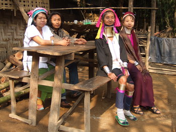

ความเป็นอยู่ชาวกะยันในพม่า
ชาวกะยันเป็นเผ่าที่ทำงานหนักซึ่งงานหลักของชาวกะยัน คือ การทำเกษตรกรรม ได้แก่ ข้าวโพด
ยาสูบ ฝ้ายและผลไม้ รวมถึงชาวกะยันยังเลี้ยงหมู เป็ด ไก่ วัว ควาย
เพื่อนำไปแลกเปลี่ยนกับสินค้าชนิดอื่น
ความเป็นอยู่ชาวกะยันในไทย
ชาวกะยันที่อาศัยอยู่ในประเทศไทยอยู่ในฐานะ "ผู้หลบหนีภัยจากการสู้รบ" ทำให้ชาวกะยันไม่สามารถ
มีทำกินได้นอกจากเพาะปลูกพืชผลไม้ใกล้บ้านและเลี่ยงสัตว์ แต่นอกจากนี้ชาวกะยันมีรายได้เพิ่ม
เติมจากการขายของที่ระลึกให้นักท่องเที่ยวที่มาเยี่ยมชมหมู่บ้าน ซึ่งเป็นหน้าที่ของผู้หญิง
ส่วยผู้ชาย
จะไปฝึกทหารและล่าสัตว์
บทบาทของหญิง-ชายในพม่า
หญิง : แลกเปลี่ยนผลผลิตและค้าขายเหล้าขาว สามารถเดินทางไปขายของนอกเมืองได้
ผู้หญิงชาวกะยันมีหน้าที่ดูแลบ้าน ทอผ้า สานตะกร้า ทำการเพาะปลูก ตักฟืนและน้ำไว้ใช้
ชาย : ผู้ชายชาวกะยันมีฝีมือดีในเรื่องการออกล่าสัตว์ โดยใช้สุนัขในการล่า และใช้อุปกรณ์
โบราณในการล่าสัตว์

ชาวกะยันในไทย
เด็กกะยันรุ่นใหม่ไม่ชอบชีวิตที่เป็นอยู่เพราะรู้สึกว่าเบื่อหน่าย
จึงเอาห่วงที่คอออกแล้วไปใช้ชีวิต
แบบคนไทนในจังหวัดแม่ฮ่องสอน